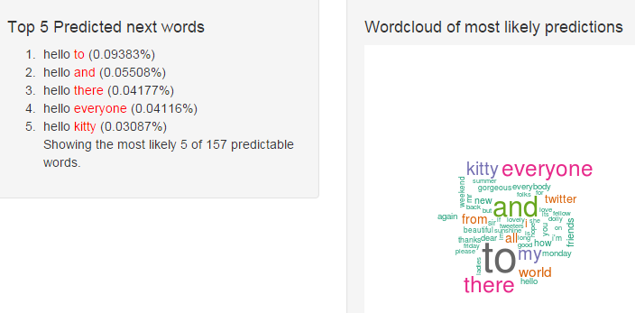

Word prediction app
This app is designed to be very simple to use offering the user a clean interface, simple text input box and, as shown below, textual and graphical representations of the next predicted word based upon their entry.

There is also a language selection box to allow alternate prediction languages to be selected. Using this will result in a small delay whilst the new language data is loaded to support the prediction functions.
--- .class #id bg:#ccccff
Data cleaning
With language evolving so quickly you need a new approach to achieve the best prossible predictions.
This app makes use of custom regular expressions in addition to standard natural language processing functions to try and sanitise the user input taking in to account some variations of emoiticons and "text speak".
Numbers and profanity (as defined by the
These tokens will never be presented as predictions to the user.